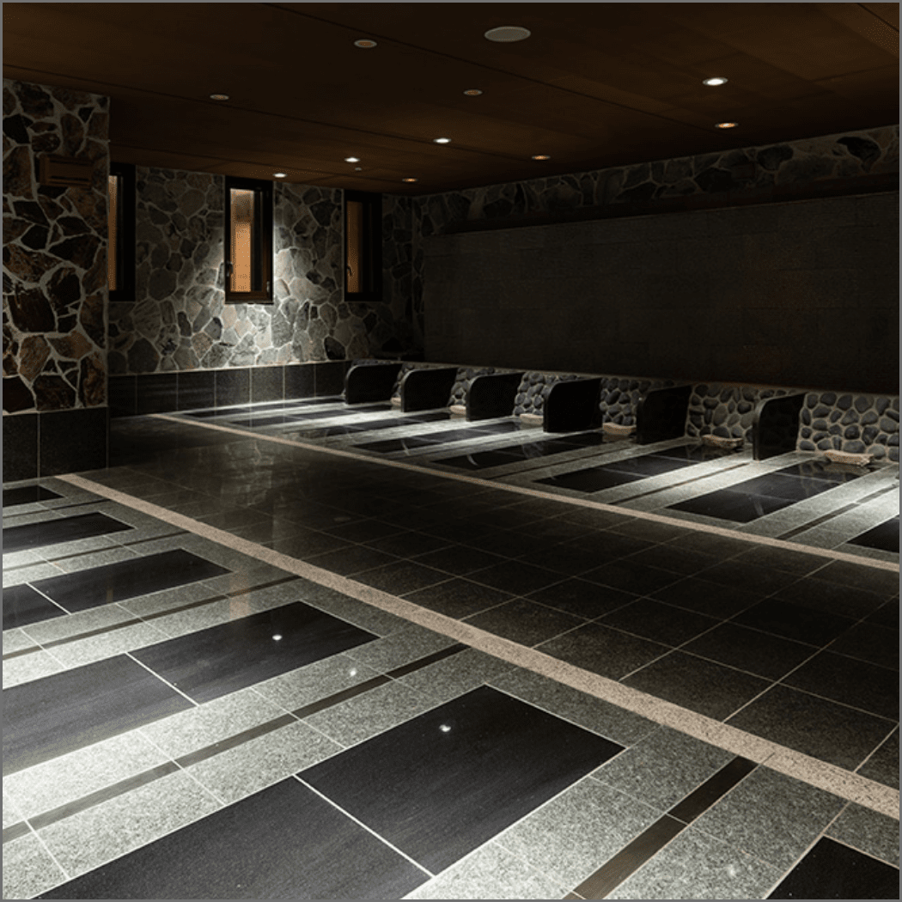
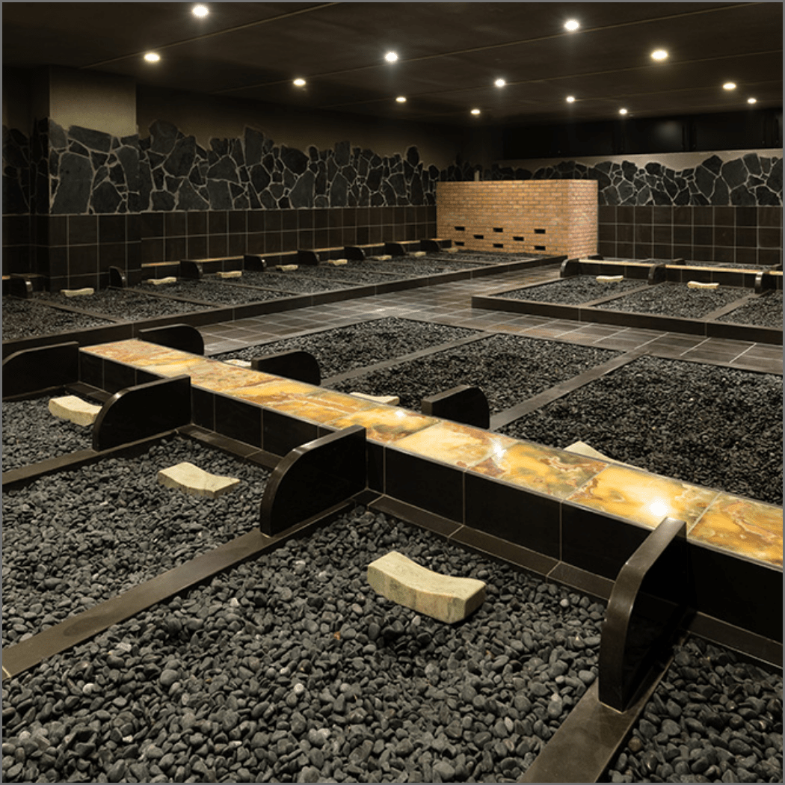
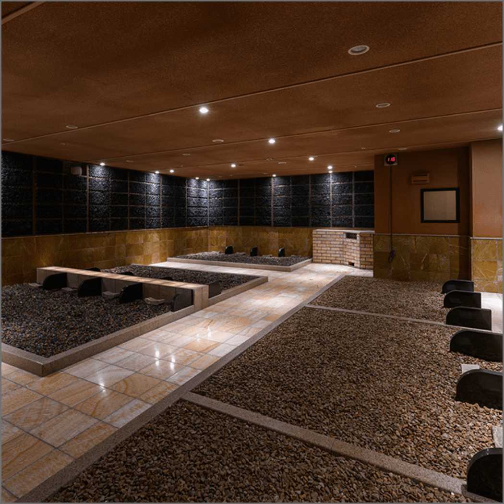
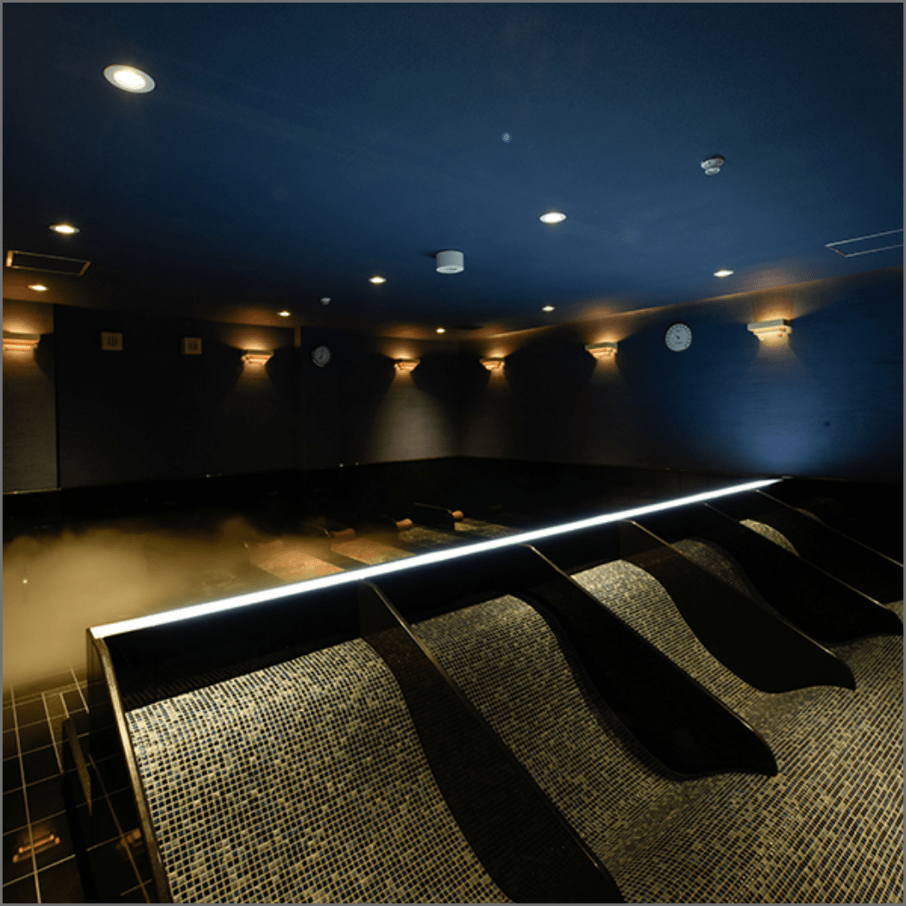
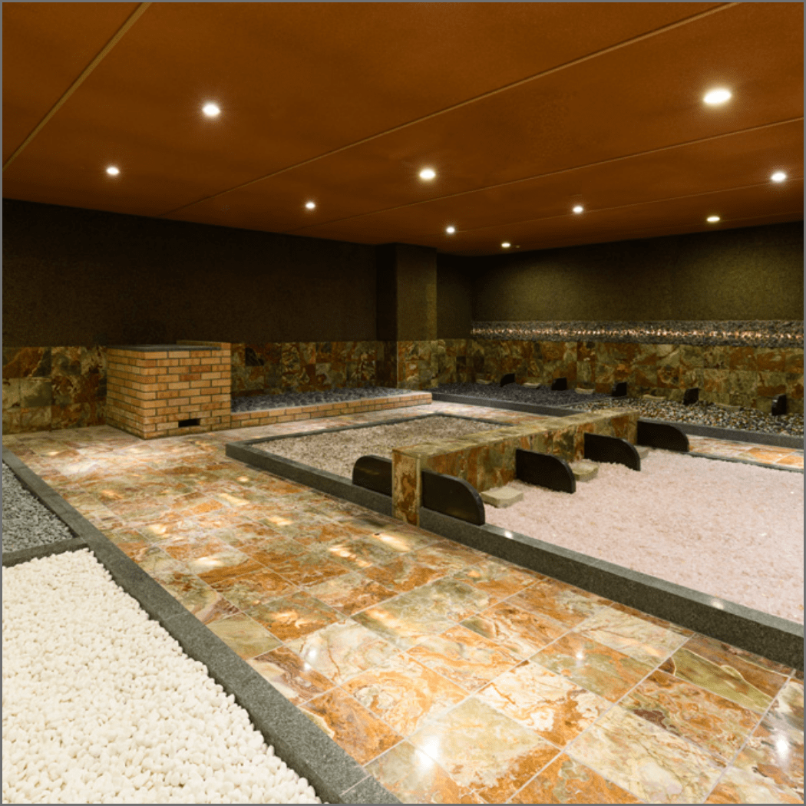
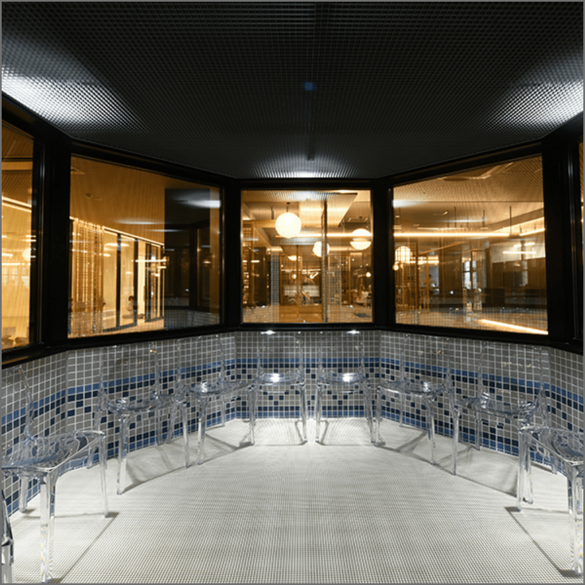

５種類の岩盤浴

雲海洞・炎蒸洞・美蒸洞・香蒸洞・麗蒸洞
５種類の異なる温度の岩盤浴とクールダウンのお部屋をご用意。
鉱石から発せられる熱により、身体を芯からあたためます。

雲海洞（うんかいどう）17床

炎蒸洞（えんじゅどう）17床

美蒸洞（びじゅどう）28床

香蒸洞（こうじゅどう）28床

麗蒸洞（れいじゅどう）29床

氷涼（ひょうりょう）10床
岩盤浴の効能
岩盤浴は、適正な湿度に保たれた室内で温めた岩盤の上で横になり、
湯着のまま身体を温める温熱浴です。
温められたブラックシリカ、麦飯石などの床は、
マイナスイオン・遠赤外線を放射し、身体を芯から温め血行が促進されます。
ご入浴法
- 1. お風呂でお体を洗い、専用の湯着へお着替えください。
- ※貴金属類はお外しください。
- 2. 岩盤スペースにバスタオルを敷き、
- うつ伏せで5分、あお向けで10分横になります。
- 3. 充分な水分補給を行い、休憩室でお休みください。
この入浴手順を2～3回繰り返します。
体調に合わせて入浴回数を調整し、無理な入浴はお避けください。
安全にご利用いただくために
- ・中学生以上のご利用とさせていただきます。
- ・ご利用の際は当館専用の湯着を着用してください。
- ・床が高温になりますので、必ず身長より大きいバスタオルを敷いてご利用ください。
- ・脱水症状を防ぐ為、水分補給は充分に行ってください。
- ・熟睡による低温やけどにご注意ください。
- ・ご入浴中は他のお客様のご迷惑にならないよう、お静かにお願いします。
- ・室内では衛生保持のため、床・岩盤等に濡れタオルをしぼらないようお願いします。
- ・泥酔されている方のご利用を固くお断りいたします。
- ・室内へのタオル以外のものの持ち込みはご遠慮ください。
- ・室内での場所取り、割り込みなどの行為は固くお断りいたします。
次の方はご利用をお控えください
- ・心臓の弱い方
- ・ペースメーカーの方
- ・体調の悪い方
- ・飲酒している方
- ・妊娠中の方
- ・生理中の方